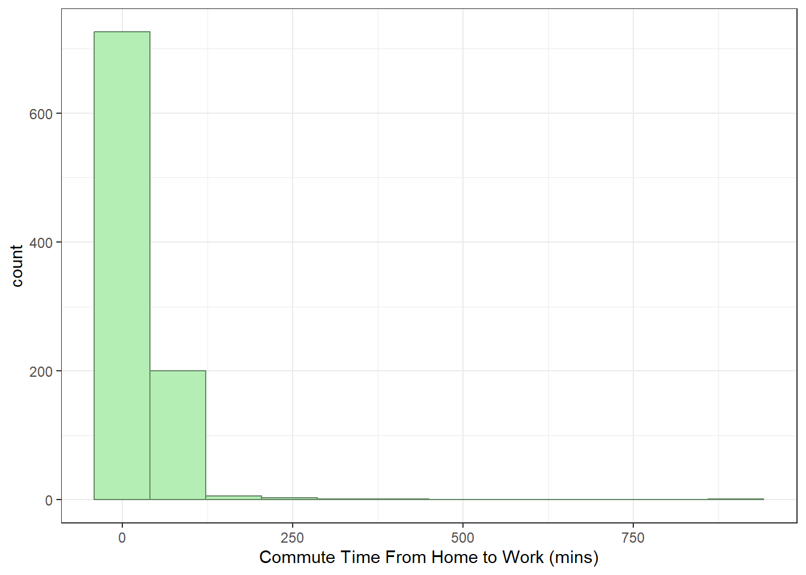
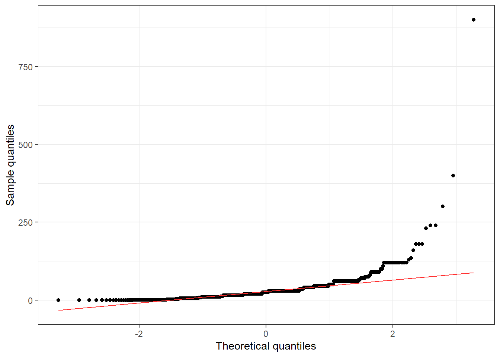
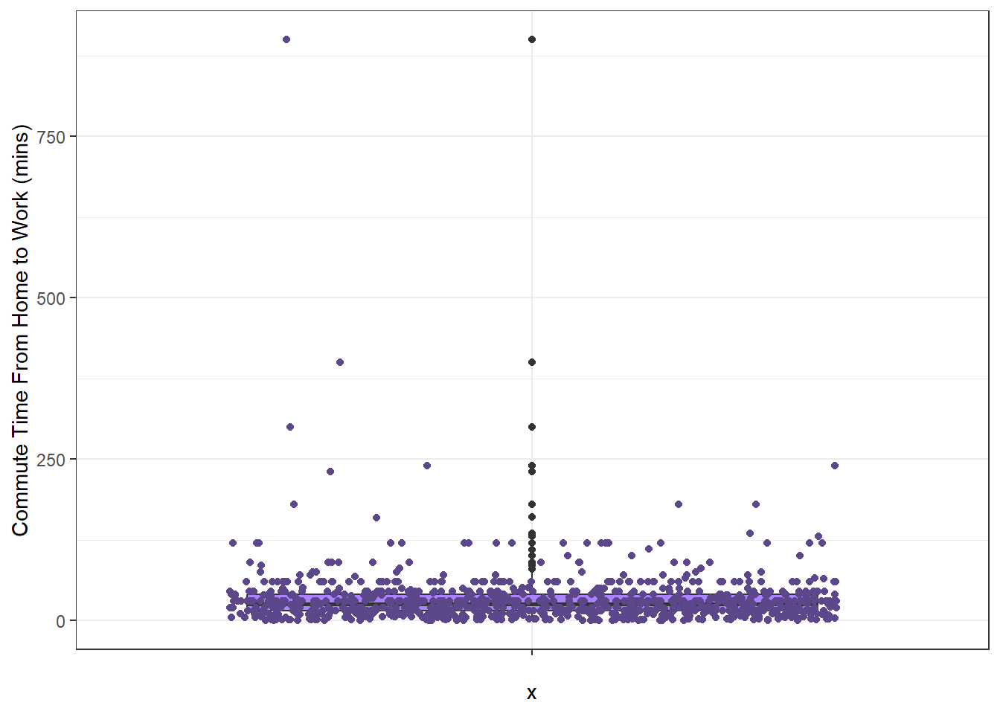

library(dplyr)
library(tidyr)
library(ggplot2)
ecec <- read.csv("Data sets/ecec-survey-2023.csv") 5 t-tests: one sample and two sample
We will be covering a number of statistical tests throughout this course. Which statistical test you choose, depends on the type of experiment or study has been conducted and what type of data we have. In this chapter, we will specifically focus on applying one-sample and two-sample t-tests.

Instead of using the normal (Z) distribution, t-tests use the t-distribution. This is because t-tests are usually based on smaller sample sizes, so we need to account for extra uncertainty in the standard error and critical values. As the sample size gets bigger, the t-distribution becomes almost identical to the Z-distribution, as can be seen below.

Like the previous chapter, we can use a hypothesis testing framework to approach our research questions.

Before starting this lesson, you’ll need to download some data.
Let’s apply our skills to some real data provided by the NSW Government, and see how even the skills we have learnt in three chapters can already be useful to the real world.
Data.NSW is an open data poral with over 16,724 NSW public sector datasets to download. You can also access additional Open Data Portals listed here:
6 One Sample t-test
We will look at the 2023 Early Childhood Education and Care (ECEC) survey. This survey collected responses from around 2,000 NSW parents and carers during January and February 2023, and was designed to understand which policy options families value most and what barriers affect their access to early childhood education and care. The dataset includes a broad mix of information: demographics, employment patterns, commuting times, childcare usage, costs, and satisfaction ratings. Because it contains both continuous and categorical variables, it provides a useful starting point for learning how to apply statistical tests to real-world data.
Working with real survey data can be messy, so we will go step by step and decide what needs cleaning and what does not. We’ll begin by loading the required packages and importing the dataset.
Let’s take a look at the first six rows.
str(ecec)'data.frame': 2015 obs. of 678 variables:
$ Row : int 1 2 3 4 5 6 7 8 9 10 ...
$ CaseID : int 1 2 3 4 5 6 7 8 9 10 ...
$ RecallCode : chr "af0c9b6f-d7bb-4763-a47f-1684ec1b9024" "31c60a20-c8ef-4114-bcc8-59151000fff1" "8dba2e62-a33f-4974-8bdf-9ebfcdfc0216" "711984d0-d943-405e-9fab-267a4e8e4087" ...
$ Segment6 : chr "Non User Sydney" "Non User Sydney" "Full User Other NSW" "Full User Sydney" ...
$ SubmittedDate : chr "24-Jan-23" "24-Jan-23" "24-Jan-23" "24-Jan-23" ...
$ ResponseTimeMinutes : num 33.37 15.59 11.81 14.05 7.35 ...
$ BWS_BLOCK : chr "Block 4" "Block 1" "Block 3" "Block 3" ...
$ DCE_BLOCK : chr "Block 5" "Block 9" "Block 8" "Block 9" ...
$ SQ1 : chr "Male" "Male" "Female" "Female" ...
$ SQ1_OTH : logi NA NA NA NA NA NA ...
$ SQ2 : int 1978 1999 1989 1977 1990 2000 2003 1978 1989 1978 ...
$ SQ3 : chr "Sydney" "Sydney" "Other NSW" "Sydney" ...
$ SQ4 : chr "Yes" "Yes" "Yes" "Yes" ...
$ SQ5 : chr "Yes, I am the parent and have childcare responsibilities" "Yes, I am the parent and have childcare responsibilities" "Yes, I am the parent and have childcare responsibilities" "Yes, I am the parent and have childcare responsibilities" ...
$ SQ6_1 : int 1 1 0 0 1 1 1 1 0 0 ...
$ SQ6_2 : int 0 0 0 0 1 0 0 0 0 1 ...
$ SQ6_3 : int 0 0 1 1 0 0 0 0 1 0 ...
$ SQ6_4 : int 1 0 0 1 0 0 0 0 0 0 ...
$ SQ6_5 : int 0 0 0 0 0 0 0 2 0 0 ...
$ SQ6_6 : int 0 0 0 1 0 0 1 2 0 0 ...
$ GROUP : chr "ECEC non-user household" "ECEC non-user household" "ECEC full user household" "ECEC full user household" ...
$ TXTREP1 : chr "Please fill in the table below for each child under the age of 18, from the youngest to the oldest." "Please fill in the table below for your child under the age of 18." "Please fill in the table below for your child under the age of 18." "Please fill in the table below for each child under the age of 18, from the youngest to the oldest." ...
$ A1_1 : chr "June" "January" "November" "January" ...
$ A1_2 : int 2010 2018 2018 2006 2021 2020 2019 2006 2021 2018 ...
$ A1_3 : chr "Female" "Male" "Female" "Male" ...
$ A1_4 : chr "No" "No" "Yes, this Child has a Major Health Issue" "No" ...
$ A1_5 : chr "No" "No" "Yes, I receive financial support from the government for this child (other than the Child Care Subsidy)" "No" ...
$ A2_1 : chr "March" "" "" "March" ...
$ A2_2 : int 2019 NA NA 2010 2021 NA 2004 2007 NA NA ...
$ A2_3 : chr "Female" "" "" "Male" ...
$ A2_4 : chr "No" "" "" "No" ...
$ A2_5 : chr "" "" "" "No" ...
$ A3_1 : chr "" "" "" "February" ...
$ A3_2 : int NA NA NA 2019 NA NA NA 2012 NA NA ...
$ A3_3 : chr "" "" "" "Female" ...
$ A3_4 : chr "" "" "" "No" ...
$ A3_5 : chr "" "" "" "No" ...
$ A4_1 : chr "" "" "" "" ...
$ A4_2 : int NA NA NA NA NA NA NA 2014 NA NA ...
$ A4_3 : chr "" "" "" "" ...
$ A4_4 : chr "" "" "" "" ...
$ A4_5 : chr "" "" "" "" ...
$ A5_1 : chr "" "" "" "" ...
$ A5_2 : int NA NA NA NA NA NA NA 2021 NA NA ...
$ A5_3 : chr "" "" "" "" ...
$ A5_4 : chr "" "" "" "" ...
$ A5_5 : chr "" "" "" "" ...
$ A6_1 : chr "" "" "" "" ...
$ A6_2 : int NA NA NA NA NA NA NA NA NA NA ...
$ A6_3 : chr "" "" "" "" ...
$ A6_4 : chr "" "" "" "" ...
$ A6_5 : chr "" "" "" "" ...
$ A7_1 : chr "" "" "" "" ...
$ A7_2 : int NA NA NA NA NA NA NA NA NA NA ...
$ A7_3 : chr "" "" "" "" ...
$ A7_4 : chr "" "" "" "" ...
$ A7_5 : chr "" "" "" "" ...
$ A8_1 : chr "" "" "" "" ...
$ A8_2 : int NA NA NA NA NA NA NA NA NA NA ...
$ A8_3 : chr "" "" "" "" ...
$ A8_4 : chr "" "" "" "" ...
$ A8_5 : chr "" "" "" "" ...
$ A9_1 : logi NA NA NA NA NA NA ...
$ A9_2 : logi NA NA NA NA NA NA ...
$ A9_3 : logi NA NA NA NA NA NA ...
$ A9_4 : logi NA NA NA NA NA NA ...
$ A9_5 : logi NA NA NA NA NA NA ...
$ Q1_1 : chr "YES" "YES" "" "" ...
$ Q1_2 : chr "NO" "NO" "" "" ...
$ Q1_3 : chr "NO" "NO" "" "" ...
$ Q1_4 : chr "NO" "NO" "" "" ...
$ Q1_5 : chr "NO" "NO" "" "" ...
$ Q1_6 : chr "NO" "NO" "" "" ...
$ Q1_7 : chr "NO" "NO" "" "" ...
$ Q1_8 : chr "NO" "NO" "" "" ...
$ Q1_OTH : chr "" "" "" "" ...
$ Q1N : chr "1" "1" "" "" ...
$ Q2_1 : int 100 100 NA NA 100 100 35 100 NA NA ...
$ Q2_2 : int NA NA NA NA NA NA 65 NA NA NA ...
$ Q2_3 : int NA NA NA NA NA NA NA NA NA NA ...
$ Q2_4 : int NA NA NA NA NA NA NA NA NA NA ...
$ Q2_5 : int NA NA NA NA NA NA NA NA NA NA ...
$ Q2_6 : int NA NA NA NA NA NA NA NA NA NA ...
$ Q2_7 : int NA NA NA NA NA NA NA NA NA NA ...
$ Q2_8 : int NA NA NA NA NA NA NA NA NA NA ...
$ Q3_1 : chr "NO" "NO" "" "" ...
$ Q3_2 : chr "NO" "NO" "" "" ...
$ Q3_3 : chr "YES" "YES" "" "" ...
$ Q4 : chr "" "" "" "" ...
$ Q5 : chr "3" "4" NA NA ...
$ Q6_1 : int NA NA NA NA 10 NA NA NA NA 8 ...
$ Q6_2 : int NA NA NA NA NA NA NA NA NA NA ...
$ Q6_3 : int NA NA NA NA NA NA NA NA NA NA ...
$ Q6_4 : int NA NA NA NA NA NA NA NA NA NA ...
$ Q6N : int NA NA NA NA 10 NA NA NA NA 8 ...
$ Q7_1 : chr "" "" "" "" ...
$ Q7_2 : chr "" "" "" "" ...
$ Q7_3 : chr "" "" "" "" ...
$ Q7_4 : chr "" "" "" "" ...
[list output truncated]Wow! There is a lot going on. Don’t worry about the NA values you see. Missing data is extremely common in large surveys, and we’ll make sure to remove any NA entries that would interfere with our analysis.
You may also notice that some of the variable names aren’t very descriptive. That can happen depending on how the original survey was designed or exported. Instead of renaming everything, we’ll concentrate on the specific variables we need for our t-test. If you want to see the exact wording of the survey questions, you can refer to the questionnaire provided alongside the dataset here.
6.1 Hypotheses

Photo by niko nguyen on Unsplash
SQ1 represents gender, so we can go ahead and rename it to Gender.
D6_1 represents the average commute time from home to work.
The average commuting time in Australia is 29 minutes, according to the Research Report 144 from the Department of Infrastructure and Regional Development. A useful research question to explore from here is whether the average commute from home to work for female carers in NSW is greater than this national benchmark.
Before cleaning the data, we need to set out our hypotheses.
\(H_0:\) The average work commute time from home to work for female carers across NSW is not significantly different from 29 mins.
\(H_A:\) The average work commute time from home to work for female carers across NSW was significantly greater than 29 mins.
We can express this in mathematical notation:
\(H_0:\) \(\mu = 29\)
\(H_A:\) \(\mu > 29\)
Let’s prepare the data.
ecec_1 <- ecec %>%
rename(Gender = SQ1,
Work_Commute = D6_1) %>%
select(Gender, Work_Commute) %>%
drop_na(Gender, Work_Commute)
ecec_1$Gender <- as.factor(ecec_1$Gender)Let’s take a look at the structure of our new data set.
str(ecec_1)'data.frame': 1567 obs. of 2 variables:
$ Gender : Factor w/ 3 levels "Female","Male",..: 1 1 1 2 2 1 2 1 1 1 ...
$ Work_Commute: int 65 30 900 40 960 30 34 15 30 15 ...You might notice that there are 3 levels of Gender. We can check this:
table(ecec_1$Gender)
Female Male Non-binary
938 626 3 Since we only interested in female carers, we can filter the data.
ecec_2 <- ecec_1 %>%
filter(Gender %in% "Female")Let’s take a look at the structure again.
str(ecec_2)'data.frame': 938 obs. of 2 variables:
$ Gender : Factor w/ 3 levels "Female","Male",..: 1 1 1 1 1 1 1 1 1 1 ...
$ Work_Commute: int 65 30 900 30 15 30 15 20 45 30 ...Don’t worry that it says 3 levels. The data has been filtered (we can tell by comparing the observations from before filtering and after).
- How many observations are there?
- How many variables are there?
- How many categorical variables are there?
- How many discrete numerical variables are there?
- How many continuous numerical variables are there?
Now we can move on to checking the conditions. To start, we’ll create a few useful plots of the home-to-work commute data. These will help us assess whether the observations can reasonably be treated as independent and whether the distribution is close enough to normal for our purposes. The normality requirement becomes less strict as the sample size grows. Slight skewness is fine around n = 15, moderate skewness is acceptable around n = 30, and even strong skewness is workable once the sample size exceeds about 60.
ggplot(data=ecec_2, aes(x=Work_Commute))+
geom_histogram(bins=12, col="darkseagreen4", fill="darkseagreen2")+
theme_bw()+
labs(x="Commute Time From Home to Work (mins)")
ggplot(data=ecec_2, aes(y=Work_Commute, x=""))+
geom_boxplot(fill="mediumpurple1")+
theme_bw()+
labs(y="Commute Time From Home to Work (mins)")
ggplot(data=ecec_2, aes(sample=Work_Commute))+
geom_qq()+ #This creates the points
geom_qq_line(col="firebrick1")+ #this creates the line
labs(x="Theoretical quantiles", y="Sample quantiles")+
theme_bw()
ggplot(data=ecec_2, aes(y=Work_Commute, x=""))+
geom_boxplot(fill="mediumpurple1")+
theme_bw()+
labs(y="Commute Time From Home to Work (mins)")+
geom_jitter(col="mediumpurple4")
With 938 observations, the sample size is well above the point where normality becomes a concern. The plots show that the data are strongly right-skewed with some very large outliers. With a sample this large, the Central Limit Theorem kicks in, so the mean will still have an approximately normal sampling distribution.
For independence, we can lean on a few simple checks. Our data represent 938 female carers in NSW, which is only a tiny fraction of the overall population of female carers in the state, so we’re safely under the 10% guideline.
Because this comes from what appears to be a large, population-level survey rather, it’s reasonable to treat each person’s commute time as an independent observation.
Now that we’ve checked conditions, we can proceed with t-test. We can do this with one simple line of code:
t.test(ecec_2$Work_Commute, mu = 29, alternative = "greater")
One Sample t-test
data: ecec_2$Work_Commute
t = 2.1482, df = 937, p-value = 0.01598
alternative hypothesis: true mean is greater than 29
95 percent confidence interval:
29.69916 Inf
sample estimates:
mean of x
31.9936 
the t-value (the statistic), the degrees of freedom (which is n-1), and the p-value: these allow us to draw our conclusion.
the sample mean.
and the confidence interval – though for a 1-sided test this isn’t a priority.
The p-value (\(t_{937}=2.1482, p=0.0.01598\)) is less than 0.05, so we have evidence to reject the null hypothesis. Therefore, there is evidence that the mean commute time from home to work for female carers in NSW is significantly greater than 29 minutes.
Note that if instead the alternative hypothesis had been Ha: μ<29 we would instead have:
t.test(ecec_2$Work_Commute, mu = 29, alternative = "less")
One Sample t-test
data: ecec_2$Work_Commute
t = 2.1482, df = 937, p-value = 0.984
alternative hypothesis: true mean is less than 29
95 percent confidence interval:
-Inf 34.28805
sample estimates:
mean of x
31.9936 or if it was Ha: μ≠29 we would have
t.test(ecec_2$Work_Commute, mu = 29, alternative = "two.sided")
One Sample t-test
data: ecec_2$Work_Commute
t = 2.1482, df = 937, p-value = 0.03195
alternative hypothesis: true mean is not equal to 29
95 percent confidence interval:
29.25878 34.72843
sample estimates:
mean of x
31.9936 NOTE that you can only calculate the confidence intervals with the two sided t-test. EG alternative="two.sided". If you need the confidence intervals, then you need to run this test regardless of what your alternative hypothesis is. You should use the p-value from the test that corresponds to your alternative hypothesis though.
Therefore, using the output from the two-sided test, with 95% confidence, the average commute time from home-to-work for female carers across NSW is between 29 minutes and 35 minutes longer than the national average. Because this range does not include zero, it points to a clear difference.
This naturally raises other questions. For instance, because we are looking at all of NSW, it’s possible that cities like Sydney are pushing the average up. These are the kinds of patterns you could explore further with the dataset.
7 Two Sample t-test
For our Two Sample t-test,
D6_1 represents the average commute time from home to work and D6_2 represents the average commute time from work to home in minutes.
Rather than renaming both of these, we can combine them to create a single Commute_Time variable that reflects the total daily commute.
Before we begin cleaning the data, we need to set out our hypotheses. We are interested in whether total commute time differs between male and female carers in NSW.
\(H_0:\) On average, there is no difference in the total commute time to work between male and female carers in NSW.
\(H_A:\) On average, there is a significant difference in the total commute time to work between males and females carers in NSW.
We can express this in mathematical notation:
\(H_0:\) \(\mu_{males}=\mu_{females}\)
\(H_A:\) \(\mu_{males} \neq \mu_{females}\)
With the hypotheses established, we can now move on to cleaning and preparing the dataset.
# We rename SQ1 to Gender
# We select the variables we want to do analysis on
# We will also drop the NA from the variables we want to do analysis on
ecec_new <- ecec %>%
rename(Gender = SQ1) %>%
select(Gender, D6_1, D6_2) %>%
drop_na(Gender, D6_1, D6_2)
# Let's add a total commute time column
ecec_new$Commute_Time <- ecec_new$D6_1 + ecec_new$D6_2Great! We will also need to turn Gender into a Factor variable.
ecec_new$Gender <- as.factor(ecec_new$Gender)Let’s take a look at the structure of our new data set.
str(ecec_new)'data.frame': 1539 obs. of 4 variables:
$ Gender : Factor w/ 3 levels "Female","Male",..: 1 1 1 2 2 1 2 1 1 1 ...
$ D6_1 : int 65 30 900 40 960 30 34 15 30 15 ...
$ D6_2 : int 50 30 300 40 1340 30 34 25 20 20 ...
$ Commute_Time: int 115 60 1200 80 2300 60 68 40 50 35 ...You might notice that there are 3 levels of Gender. We can check this:
table(ecec_new$Gender)
Female Male Non-binary
922 614 3 We have 922 female respondents, 614 male respondents, and 3 Non-binary. Since we want to do a two sample t-test and we have a very low response rate from non-binary individuals, we will focus our analysis on males and females. We can filter the data as such:
ecec_new1 <- ecec_new %>%
filter(Gender %in% c("Male", "Female"))str(ecec_new1)'data.frame': 1536 obs. of 4 variables:
$ Gender : Factor w/ 3 levels "Female","Male",..: 1 1 1 2 2 1 2 1 1 1 ...
$ D6_1 : int 65 30 900 40 960 30 34 15 30 15 ...
$ D6_2 : int 50 30 300 40 1340 30 34 25 20 20 ...
$ Commute_Time: int 115 60 1200 80 2300 60 68 40 50 35 ...Don’t worry that it says 3 levels. The data has been filtered (we can tell by comparing the observations from before filtering and after).
- How many observations are there?
- How many variables are there?
- How many categorical variables are there?
- How many discrete numerical variables are there?
- How many continuous numerical variables are there?
attach(ecec_new1)We can now plot the data and check conditions.
ggplot(data=ecec_new1, aes(x=Gender, y=Commute_Time))+
geom_boxplot(fill = c("lavenderblush1", "lemonchiffon"))+
labs(x="Sex", y="Average Commute Time (mins)")+
theme_bw()
ggplot(ecec_new1, aes(sample=Commute_Time))+
geom_qq()+
geom_qq_line(col="red")+
labs(x="Theoretical quantiles", y="Sample quantiles")+
theme_bw()+
facet_wrap(~Gender)
We can see that there are a lot of outliers for both females and males. Even so, the main part of each boxplot looks fairly similar in shape, so there’s no obvious imbalance between the groups.
Looking at the Q-Q plots, there is some deviation in the upper tail for females, and males shows some slight deviation as well with one extreme value. However, most of the points still fall close to the line, so we can argue that the data look approximately normal in the middle of the distribution even if the tails stretch out.
A bit of skewness is fine with big samples. Slight skewness is usually ok with sample sizes around 15, moderate skewness with 30, and even strong skewness becomes acceptable once you get past about 60. Since our sample sizes are very large (female: 922 and male: 614), the t-test can handle the skewness without much trouble.
We can calculate the point estimates, and standard errors. A convenient way to do this across groups is:
aggregate(Commute_Time~Gender, FUN=mean) Gender Commute_Time
1 Female 64.65835
2 Male 70.60912aggregate(Commute_Time~Gender, FUN=sd) Gender Commute_Time
1 Female 75.21018
2 Male 104.84408aggregate(Commute_Time~Gender, FUN=length) Gender Commute_Time
1 Female 922
2 Male 614Now we can perform the test.
t.test(Commute_Time ~ Gender)
Welch Two Sample t-test
data: Commute_Time by Gender
t = -1.2137, df = 1025, p-value = 0.2251
alternative hypothesis: true difference in means between group Female and group Male is not equal to 0
95 percent confidence interval:
-15.571520 3.669982
sample estimates:
mean in group Female mean in group Male
64.65835 70.60912 The p-value (\(t_{1025}=-1.2137, p=0.2251\)) is greater than 0.05, so we fail to reject the null hypothesis. Therefore, there is no difference in average commute time to work between males and females carers across NSW.
With 95% confidence, the average commute time for females could be about 16 minutes less or about 4 minutes more than the average for males. Because this range includes zero, it doesn’t point to a clear difference between the two groups.